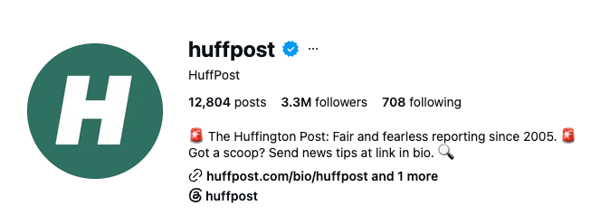

Server-side React templates rendered headlessly into composited share images at scale — the engine behind automated social posts and personalized quiz share cards at a major digital-media company.

Server-side React templates rendered headlessly into composited share images at scale — the engine behind automated social posts and personalized quiz share cards at a major digital-media company.
I architected and shipped a dynamic image-template platform that powers automated social posts and personalized share artifacts. I owned it end to end, from the rendering engine to the template authoring model, then made it a turnkey, self-service path any team could adopt.
The platform server-renders React templates headlessly, composites each one into a share image, and serves the result at scale. Templates are data-driven, so a single template produces a personalized artifact per post or per quiz taker. See the Render-flow diagram for the shape.
Operators pick a template, fill in the headline, sub-head, and source image, and preview the generated card before it ships. One interface previews the whole template catalog from the same shared engine. Interactive clean-room wireframe — edit the fields and watch the preview update:
The platform became the shared engine behind automated social posts and personalized share cards. Making it self-service meant teams could ship their own generated artifacts without routing through my team.